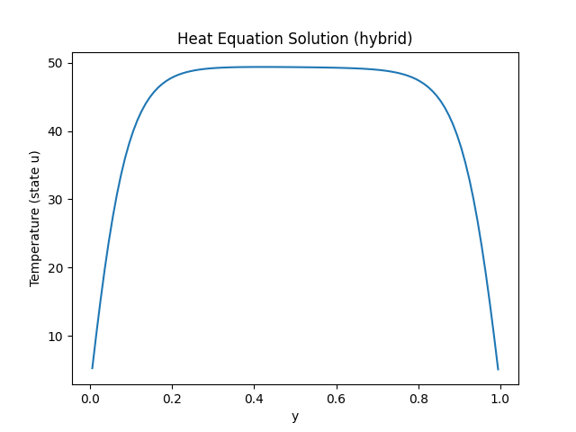

Abstract
PDE-constrained optimization problems arise in a wide range of scientific and engineering applications, including aerodynamic design, heat transfer, and inverse problems. The dominant computational cost in these problems stems from repeatedly solving large linear systems associated with discretized state and adjoint equations. Quantum linear system algorithms (QLSAs) offer exponential speedups with respect to the dimension of such systems under suitable assumptions, but their applicability to classical scientific computing is limited by the need to extract full classical solutions. In this work, we present a hybrid quantum--classical optimization framework that integrates the classical adjoint method with QLSA-based adjoint solves and swap-test-based inner product estimation. By computing reduced gradients without reconstructing the full adjoint vector, the proposed approach avoids quantum tomography and preserves the theoretical quantum advantage. By replacing the classical adjoint linear solve with a quantum solver, the complexity of our approach exhibits exponential speed-up with respect to number of state variables. Our algorithm is tested numerically using QISKIT simulator.
The central idea of this work is to accelerate gradient evaluation in PDE-constrained optimization by replacing the classical adjoint linear solve with a quantum linear system algorithm (QLSA).
In classical adjoint-based optimization, the adjoint variable p is obtained by solving the linear system
$$ A(u)^T p = \frac{\partial J}{\partial x}(x,u) $$where \(A(u)\) is the Jacobian of the discretized PDE constraint and \(J(x,u)\) is the objective functional.
Once the adjoint vector is computed, the reduced gradient of the objective with respect to the control variables is given by
$$ (\nabla \hat{J}(u))_i = \frac{\partial J}{\partial u_i} - \left\langle p,\frac{\partial c}{\partial u_i} \right\rangle . $$The proposed hybrid quantum–classical method prepares the adjoint state using a quantum linear system algorithm
$$ |p\rangle \propto A^{-T} g_x , $$where \(g_x = \partial J / \partial x\). Instead of reconstructing the full adjoint vector, the algorithm computes the required inner products directly using quantum swap-test measurements. This avoids quantum state tomography and allows the reduced gradient to be estimated while preserving the potential quantum speedup of the linear-system solve.
Method Overview
- Initialize: choose an initial control \(u^0\).
- State solve (classical): solve the discretized PDE \[ c(x^k,u^k)=0 \] to obtain the state \(x^k\).
- Objective evaluation: compute the reduced objective \[ \hat J(u^k)=J(x^k,u^k). \]
- Derivative assembly: form the Jacobian \[ A^k=\frac{\partial c}{\partial x}(x^k,u^k) \] and the state gradient \[ g_x^k=\frac{\partial J}{\partial x}(x^k,u^k). \]
- Quantum adjoint solve: prepare the adjoint state \[ |p^k\rangle \propto (A^k)^{-T} g_x^k \] using a quantum linear system algorithm.
- Gradient estimation: estimate \[ \left\langle p^k,\frac{\partial c}{\partial u_i}\right\rangle \] for each control variable using swap-test measurements.
- Control update: update the control \[ u^{k+1}=u^k-\alpha_k\nabla\hat J(u^k). \]
- Repeat until convergence.
Ignoring lower-order terms, the per-iteration runtime is dominated by:
\[ T_{\text{iter}} \approx O\!\left( (m+1)\, s n \kappa \log\!\frac{1}{\varepsilon_s} \;+\; n_u\,(\log n)\, s^2 \kappa^2 \varepsilon^{-3} \right). \](First term: classical state solves + line search. Second term: quantum adjoint preparation and swap-test gradient estimation.)
Notation.
- n – number of state variables (grid unknowns in the PDE discretization)
- nu – number of control variables in the optimization problem
- s – sparsity of the Jacobian matrix (maximum number of nonzero entries per row)
- κ – denotes an upper bound on the condition number the of the state Jacobian
- εs – tolerance used for the classical Krylov solver in the state equation
- 1/ε – accuracy parameter used in the quantum routines
- m – maximum number of additional state solves performed during the line search
A1. The reduced objective \( \hat{J}_h : \mathbb{R}^{n_u} \to \mathbb{R} \) is continuously differentiable and bounded below.
A2. The gradient \( \nabla \hat{J}_h \) is Lipschitz continuous.
A3. The inexact reduced gradient satisfies
\[ \|e^k\|_2 \le \rho \, \|\nabla \hat{J}_h(u^k)\|_2 . \]A4. The step sizes \( \alpha_k \) satisfy the bounded step-size conditions of Lemma 5.3.
Result. Under these assumptions
\[ \lim_{k\to\infty}\|\nabla \hat{J}_h(u^k)\|_2 = 0 , \]and every accumulation point of \(u^k\) is a critical point of \( \hat{J}_h \).

This plot shows the temperature distribution obtained using the hybrid quantum–classical solver for the 1D heat equation. The smooth profile reflects the expected steady-state solution with boundary constraints.

This plot shows the temperature distribution obtained using the hybrid quantum–classical solver for the 1D heat equation.
BibTeX
@article{YourPaperKey2024,
title={Your Paper Title Here},
author={First Author and Second Author and Third Author},
journal={Conference/Journal Name},
year={2024},
url={https://your-domain.com/your-project-page}
}